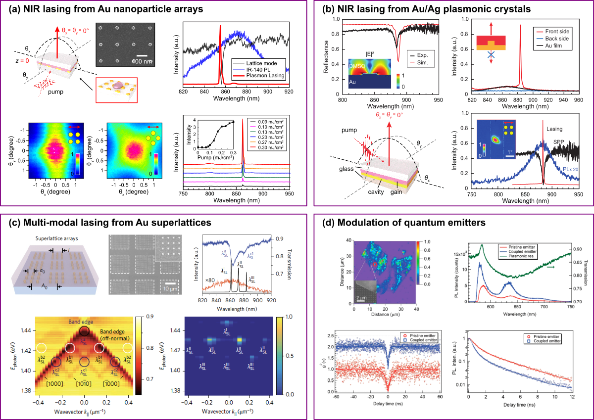
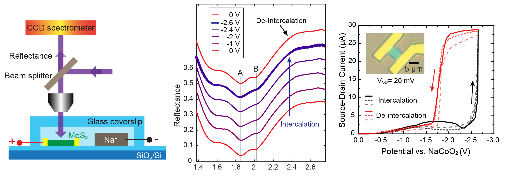

Research Yang Group
Materials and Photonics Lab
The Materials and Photonics Lab led by Dr. Ankun Yang seeks to develop novel materials and designs for use in next-generation energy storage devices.
The lab focuses on nanoscale fundamentals and scalable applications.
Research Areas
Energy Storage
 |
Related Papers
Electrochemical generation of liquid and solid sulfur on two-dimensional layered materials with distinct areal capacitiesA. Yang*, G. Zhou*, X. Kong, R.A. Vila, A. Pei, Y. Wu, X. Yu, X. Zheng, C.-L. Wu, B. Liu, H. Chen, Y. Xu, D. Chen, Y. Li, S. Fakra, H.Y. Hwang, J. Qin, S. Chu, Y. Cui
Nature Nanotechnology 15, 231-237 (2020)
See also:
D. Zhou, G. Wang, Supercool Sulfur
A. Yang, Liquid or solid sulfur matters
Supercooled liquid sulfur maintained in three-dimensional current collector for high-performance Li-S batteries
G. Zhou*, A. Yang*, G. Gao*, X. Yu, J. Xu, C. Liu, Y. Ye, A. Pei, Y. Wu, Y. Peng, Y. Li, Z. Liang, K. Liu, L.-W. Wang, Y. Cui
Science Advances 6, 21, eaay5098 (2020)
Electrotunable liquid sulfur microdroplets
G. Zhou*, A. Yang*, Y. Wang, G. Gao, A. Pei, X. Yu, Y. Zhu, L. Zong, B. Liu, J. Xu, N. Liu, J. Zhang, Y. Li, L.-W. Wang, H.Y. Hwang, M.L. Brongersma, S. Chu, Y. Cui
Nature Communications 11, 606 (2020)
Direct electrochemical generation of super-cooled sulphur microdroplets well below its melting temperature
N. Liu*, G. Zhou*, A. Yang, X. Yu, F. Shi, J. Sun, J. Zhang, B. Liu, C.-L. Wu, X. Tao, Y. Sun, Y. Cui, S. Chu
Proceedings of the National Academy of Sciences 116(3), 765-770 (2019)
Photonics
|  |
Related Papers
Real-time tunable lasing from plasmonic nanocavity arraysA. Yang, T.B. Hoang, M. Dridi, C. Deeb, M.H. Mikkelsen, G.C. Schatz, T.W. Odom
Nature Communications 6, 6939 (2015)
Unidirectional lasing from template-stripped two-dimensional plasmonic crystals
A. Yang, Z. Li, M. Knudson, A.J. Hryn, W. Wang, K. Aydin, T.W. Odom
ACS Nano 9, 11582-11588 (2015)
Band-edge engineering for controlled multi-modal nanolasing in plasmonic superlattices
D. Wang, A. Yang, W. Wang, Y. Hua, R.D. Schaller, G.C. Schatz, T.W. Odom
Nature Nanotechnology 12, 889-894 (2017)
Hetero-oligomer nanoparticle arrays for plasmon-enhanced hydrogen sensing
A. Yang, M.D. Huntington, M.F. Cardinal, S.S. Masango, R.P. Van Duyne, T.W. Odom
ACS Nano 8, 7639-7647 (2014)
Programmable and reversible plasmon mode engineering
A. Yang, A.J. Hryn, M.R. Bourgeois, W.K. Lee, J. Hu, G.C. Schatz, T.W. Odom
Proceedings of the National Academy of Sciences 113, 14201-14206 (2016)
Others: 2D Materials and thermal management
|  |
Related Papers
Reversible and selective intercalation through the top surface of few-layer MoS2J. Zhang*, A. Yang*, X. Wu*, J. Groep, P. Tang, S. Li, B. Liu, F. Shi, J. Wan, Q. Li, Y. Sun, Z. Lu, X. Zheng, G. Zhou, C.-L. Wu, S.-C. Zhang, M.L. Brongersma, J. Li, Y. Cui
Nature Communications 9, 5289 (2018)
Thermal management in nanofiber-based face mask
A. Yang, L. Cai, R. Zhang, J. Wang, P.-C. Hsu, H. Wang, G. Zhou, J. Xu, Y. Cui
Nano Letters 17(6), 3506-3510 (2017)